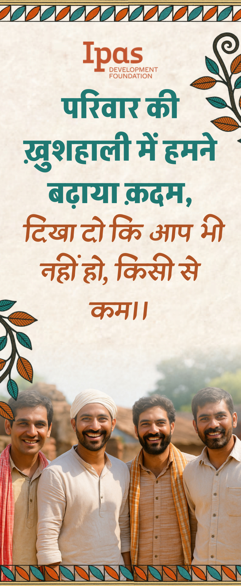
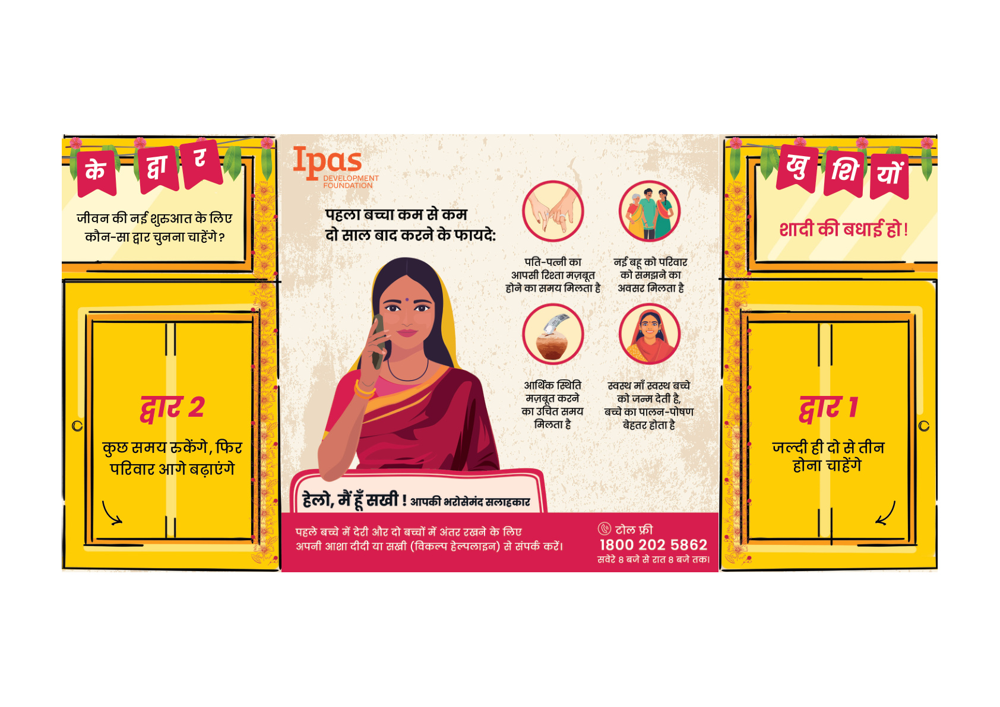
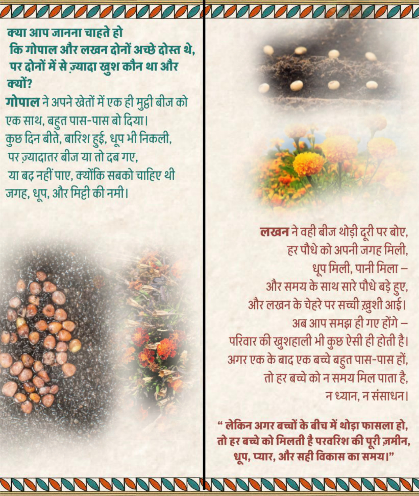

Development Communication Hackathon 2025 · Team ARSon
Family Planning Leaflet Design for Madhya Pradesh
Two Hindi print pamphlets for rural men aged 18–24 in Madhya Pradesh — zero-parity and single-parity — so family planning is not only a woman’s job. IPAS VIKALP brief. Close gate fold.

| Brief | IPAS Development Foundation · VIKALP · Problem Statement 2 |
|---|---|
| Place | Rural Madhya Pradesh |
| Audience | Married men 18–24, zero parity and single parity |
| Team | ARSon |
| Language | Hindi |
The problem in the brief
India’s family-planning programme has moved toward a rights-based frame. Reversible methods still sit low, especially among newly married and low-parity couples in rural areas. Male sterilisation is under 1% of sterilisations. About 10% of men use condoms. The work of contraception stays with women.
The IPAS VIKALP brief names the reasons: early childbirth as the expected next step after marriage; family planning treated as a female domain; elders — often the mother-in-law — holding the decision; little talk between spouses; myths about side effects and fertility. In rural Madhya Pradesh, 35% of men aged 15–49 still see contraception as a woman’s concern.
VIKALP’s ask: two separate four-page print pamphlets. Zero-parity men — delay the first child by at least two years. Single-parity men — space the second by at least three. A slogan that sticks. A call to the Vikalp helpline or the local ASHA.
What we were designing for
Team ARSon treated this as a behaviour-first job, not a polish pass on existing IPAS sheets. The research note is standalone: start from the barrier, then message, then make.
Barriers we wrote down: fertility tied to masculinity; vasectomy read as emasculating; condoms known and still misunderstood; condom use linked to promiscuity; only 17% discussing it openly; health systems talking mostly to women. Village elders, panchayat, peers, local healers, and the mother-in-law sit in the room even when they are not on the page.

Form
Close gate fold. Cover first, then a partial open, then the full sheet. Four parts: cover (C), back (B), first fold (F1), second fold (F2). Zero-parity is B1. Single-parity is B2. Visual language stays one family so both pieces sit in the same programme; copy and story change with the life stage.
The cover line is a challenge, not a lecture: परिवार की ख़ुशहाली में हमने बढ़ाया क़दम, दिखा दो कि आप भी नहीं हो, किसी से कम। Affective priming — feeling before the argument — then F1 and F2 carry the reasons and the ask.
Gond-inspired borders, because the form is Madhya Pradesh’s. Mud-wall texture on the paper. Warm reds, oranges, yellows for outdoor reading. Akshar for headings. Alkatra on the cover question. Real faces on C and F1 so the men on the page look like men in the village. The back is an ASHA didi, named, with the helpline: 1800 202 5862.

Zero parity
Delay the first child. F1 uses peer faces — the same men as the cover — looking back on the wait. Aspirational beats before a child: time for the marriage, both earning, staying off tobacco, liquor, and gambling, taking up the schemes that already exist. The refrain: जल्दी न करें, थोड़ा रुक जाएँ, सेहत, सुख और सुकून सब पाएँ.
F2 is a Gond village under a tree. ASHA in the conversation. Children on hopscotch. A scroll with the actions, not a clinic poster.
Single parity
Space the next child. F1 is a farming story, because that is work people already know. Gopal sows a fist of seed too close; most fail. Lakhan leaves room; the plants take. Marigolds stand in for children — they need gap, sun, and water. The copy says a family is the same: children born too close compete for time and care.

What we would not do
No clinical Hindi. No new organisation brand on top of IPAS. The logo stays. The pamphlets are print-first. This is not a claim about uptake in the field. It is the research note, the two Hindi pieces, and the walkthrough we took to the hackathon.
The public gallery is on Behance.